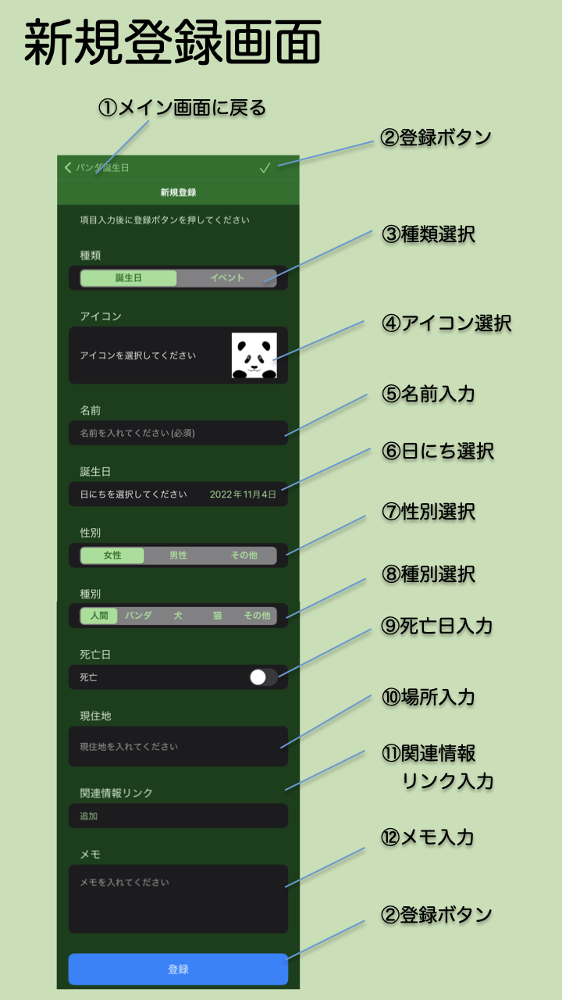

- 新規登録画面とは
- メイン画面で追加ボタンをタップして移動してくる画面です。ユーザーが自分で好きな情報を登録できます。
- 画面の説明
- ①メイン画面に戻る
- 情報登録をキャンセルしてメイン画面に戻ります。情報登録したい場合は②登録ボタンを押してください。
- ②登録ボタン
- ページ内の情報を入力した後にこのボタンをタップして情報を登録します。情報が登録されたらメイン画面に戻ります。
- ③種類選択
- まず情報の種類を選択します。誕生日あるいはイベント（記念日など）のいずれかを選びます。誕生日を選んだ場合は入力項目に⑦性別選択と⑧種別選択が増えます。
- ④アイコン選択
- メイン画面や詳細情報画面で表示されるアイコンを選びます。
- アイコン右下の✖️印をタップするとそのアイコンを削除できます。
- 画像追加を選ぶとアイコンを追加できます。登録済みアイコンから選ぶか、写真アルバムから選ぶことができます。
- ⑤名前入力
- 情報を示す名前を入力します。既にある情報と同じ名前は登録できません。
- ⑥日にち選択
- カレンダーを表示して年月日を選択します。
- ⑦性別選択
- 性別を選択します。③種類選択で誕生日を選んだ場合に表示されます。
- ⑧種別選択
- パンダもしくは犬、猫を選んだ場合は、人間年齢に換算した年齢を詳細画面で表示できます。③種類選択で誕生日を選んだ場合に表示されます。
- ⑨死亡日入力
- 設定画面の表示設定で新規登録・編集画面で死亡日を入力できるように設定した場合に表示されます。死亡を選択すると死亡日を入力できます。死亡日を入力すると詳細画面で享年などが表示されます。
- ⑩場所入力
- 現在いる場所もしくはイベントの場所を入力します。メイン画面で分類を「場所」をした場合に同じ場所がまとめられて表示されます。
- ⑪関連情報リンク入力
- ネット上の関連情報のサイトにリンクしたいときにそのURLとタイトルを入力できます。追加ボタンを押してから、タイトルとURLを入力します。
- 削除したい時は左にドラッグして表示される削除ボタンを押して下さい。
- ⑫メモ入力
- メモを入力できます。「備考：」などのように「：」で始まる短い単語から始めると、詳細画面の「メモ：」を置き換えて表示できます。